NCC provides the capability for the bundle components (bucket and counter) to have a
separate reset periodic cycle. The lifecycle can be configured at the bundle components
level. Hence, the buckets and counters do not follow the periodic life cycle of the
bundle and account.
- The lifecycle from the bucket and counter definition is copied to bucket and counter instances. Lifecycle can be associated to a bucket or counter definition before a bucket or counter instance is created.
- Lifecycle support is provided on all types of buckets except the carry over bucket.
- Lifecycle support is provided on all the counters (Device, Group, Device_Group, Multi_bundle and Subscription).
- The billing information, which is available in both account and bundle, is also added on the counter and bucket definition, and can be configured through REST API.
- The periodicity of the bucket and counter can be set as daily, weekly, monthly, or minutes. Reset Resource Action is introduced to reset the bucket and counter resources as per their defined bill cycle. The Send Notification action sends a notification upon successful reset of bucket and counter.
- ResetResourceSuccessEvent is triggered upon the successful execution of the Reset Resource Action.
- ResetResourceFailedEvent is triggered in the following cases:
- When the Reset Resource Action is not executed successfully.
- When the ResetResourceSuccessEvent fails to reset a resource.
- The Reset Resource Action and ResetResourceSuccessEvent can fail
due to the following reasons:
- Subscription was barred.
- Device or group is in a barred or final state, and the
ignoreBarredDeviceOrGroupis set to false
- The following actions do not impact the bucket and counter resources which have
a separate reset periodic cycle.
- ResetSubscription Action: This action resets only those subscription resources which do not have a lifecycle.
- RenewSubscriptionAction: This action resets only those subscription resources which do not have a lifecycle, or when triggered on account, they do not reset any device, group, device_group, or counters with a lifecycle.
- EmptySubscriptionAction: This action does not impact the buckets or counters with a lifecycle.
- Bucket and Counter entities are supported only on the PERIOD lifecycle.The ENTITY lifecycle is not allowed to be configured for bucket and counter.
 Note:
Note: - In case the bucket and counter are in a barred state as per their periodic lifecycle, the call request consumption is not possible from the respective bucket and counter, even if the subscription is in active state.
- In case the device or group is in a barred or final state, and you want to bar
the bucket and counter reset as per their periodic lifecycle , then set the
ignoreBarredDeviceOrGroupto false.
Note:Additional informationNote: This feature does not addresses the requirement of modifying the start time
for subscription, bucket or counter.
- The BundleOnUse (BOU) type of bundles can have the buckets and counters with a separate periodic lifecycle feature, provided the BOU bundles also have a periodic lifecycle.
- The future activation bundles can have resources (buckets and counters) with the separate periodic lifecycle feature, provided they have a bundle periodic lifecycle in a pre-active state (future activation).
- Step-Up buckets are reset as per the configured bucket periodic lifecycle.
- If subscription that is used for call processing has a lifecycle which is not in barred state, but the bucket or counter selected in that subscription has a lifecycle which is in barred stated, then that bucket or counter is not used from that subscription for call processing. If this subscription has any other bucket or counter, it is used if valid. If the bucket or counter is not valid, then an other subscription is picked, if applicable.
- The impending TEM entries on bucket or counter are triggered if they are pending when a call is executed on a device which has subscription containing these resources. This currently works for subscription, device, group and account.
- The impending TEM entries on bucket or counter are triggered if they are pending when the provisioning call is executed on device, group or account.
Note:-
Use case 1: Non-Bill Cycle subscribers having a Daily BOU Bundle
- The device is subscribed to a BundleOnUse (BOU) Bundle having
the bill cycle as Daily. The bundle periodic lifecyle (PLC) is
applied as Daily. The bundle has a subscription counter PLC of 15
minutes.
- Account and Subscription are created together on 12/06/2021 08:50 PM.
- BOU bundle activation date is 12/06/2021 at 09:08:00 PM.
- The bundle periodically renews every day, that is 13/06/2021 08:50 PM.
- Counter is created with bundle creation on 12/06/2021
09:08:00 PM.
- The Counter PLC is 15 minutes. Hence, it is reset every 15 minutes, that is 12/06/2021 09:23:00 (considering that the BOU bundle is activated on 12/06/2021 09:08:00 PM)
- Notification is sent upon the bucket reset (Daily or Weekly).
- Lifecycle Reset EDR and notification EDR are also generated with the bucket reset details.
Configuration details:-
BOU Bundle PLC:
- 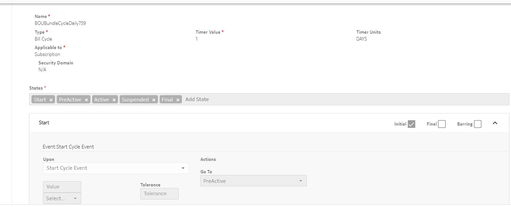
- 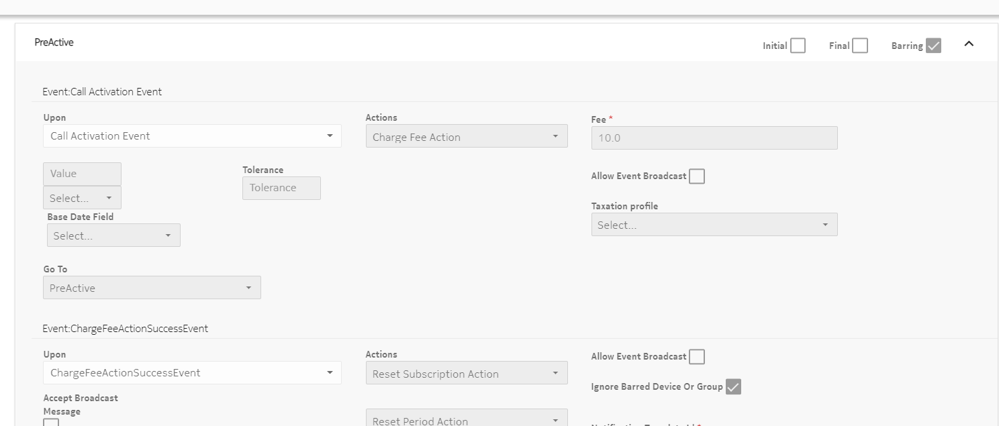
- 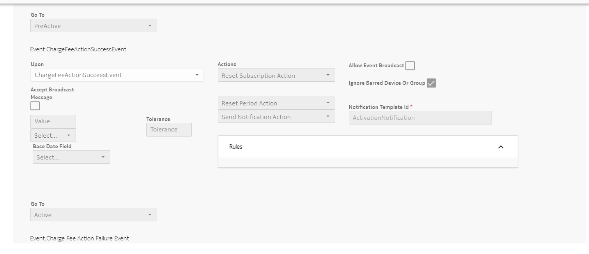
- 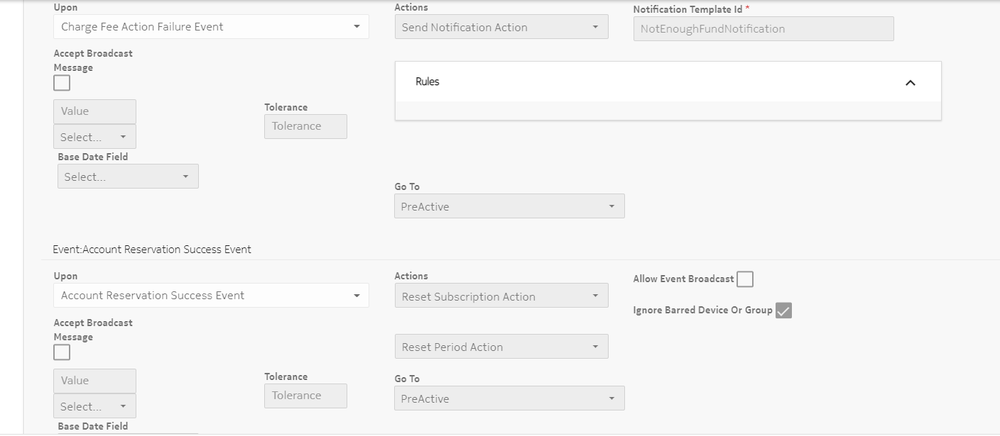
-

-
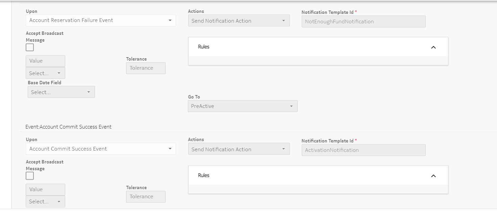
When the CallActivationEvent occurs, and the ChargeFeeAction is successfully executed to commit the BOU activation fee from the account, the Trigger Event Action is added.
When the Trigger Event Action is executed, it triggers the Resource Activate event on which the counter is listening to get activated.
- 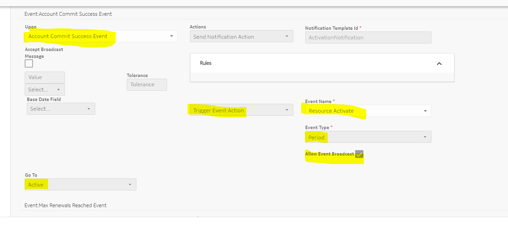
- 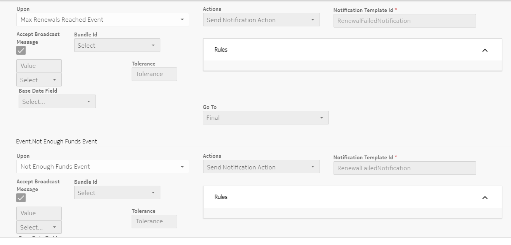
- 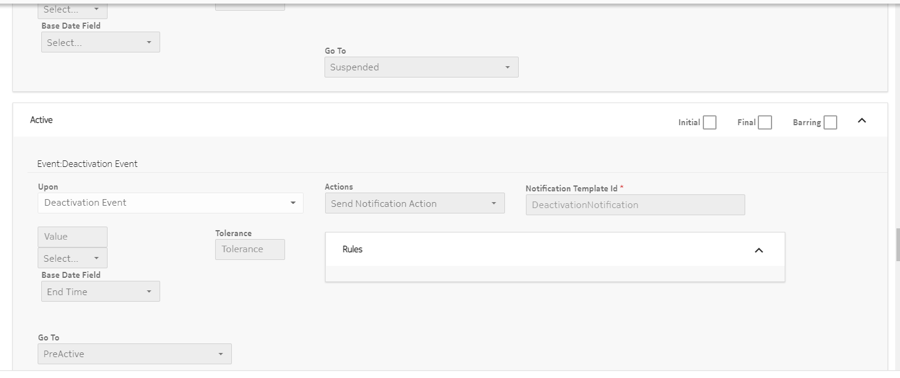
- 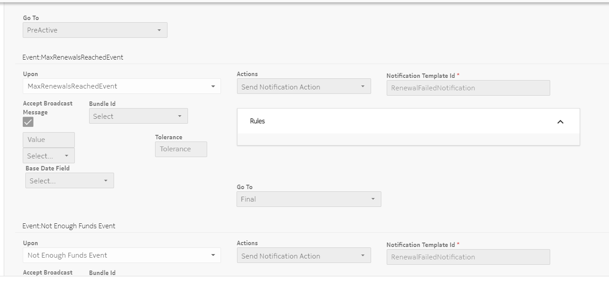
-

- 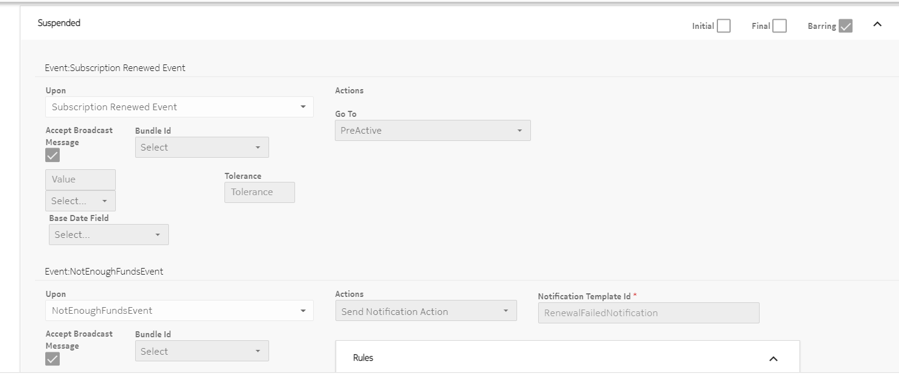
- 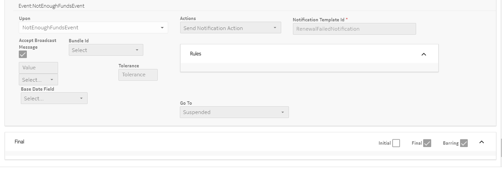
- Counter Periodic Lifecycle:
- During the Start state of the lifecycle, the StartCycleEvent is triggered.
- Reset Period Action is triggered upon the occurrence of StartCycleEvent. The Reset Period Action calculates the Start Time and End Time for a period.
- The lifecycle transits again to the Start state upon successful execution of the Reset Period Action.
- When the lifecycle reaches the End Time, the RepeatCycleEvent is triggered.
- During the execution of RepeatCycleEvent, the Reset Resource Action is triggered. The Reset Resource Action resets the counter to initial values.
- The lifecycle transits to the Start state.
- The successful execution of the Reset Resource Action triggers the ResetResourceSuccessEvent. The Reset Period Action is triggered, and the Send Notification action sends a notification upon successful reset of the counter. It is followed by the lifecycle transiting to the Start state.
- If the Reset Resource Action fails, then the ResetResourceFailedEvent is triggered on the lifecycle of the resource. It is followed by the execution of Send Notification action.
- The lifecycle again transits to the Start state.
-
BOU Activation Priority : ON_COMMIT
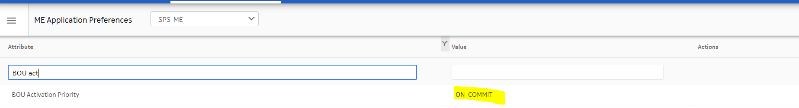 -
Bundle Billing Info:

- Charging Services: 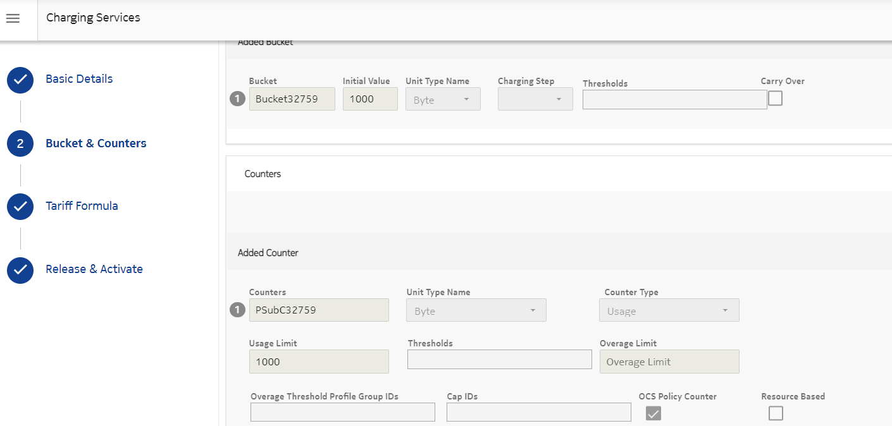
- Tariff: 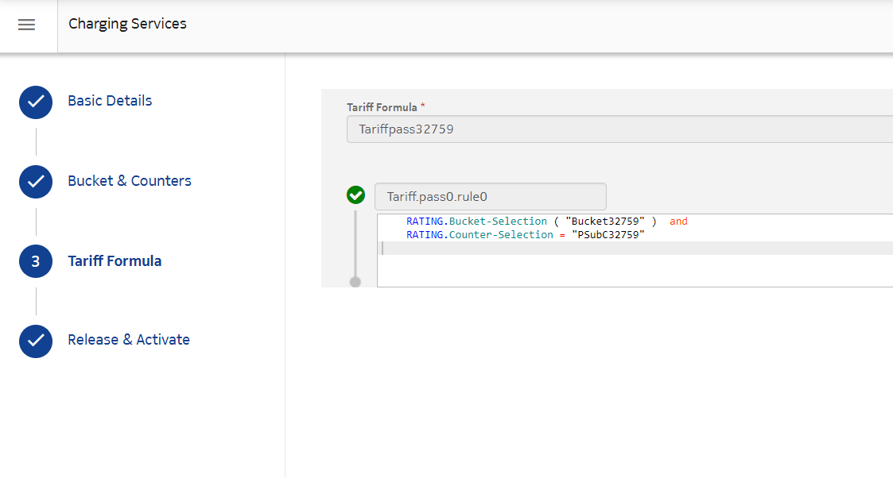
- Account billing info: 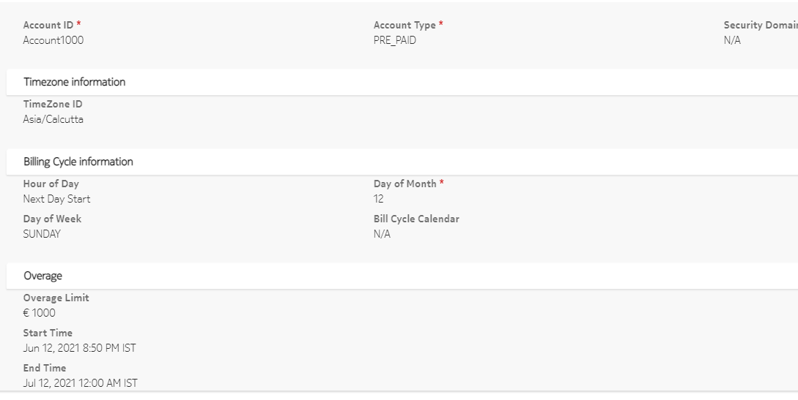
- Device subscription details: 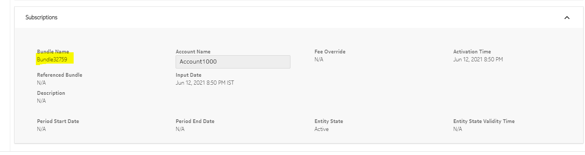
-
Account overview before calls execution: 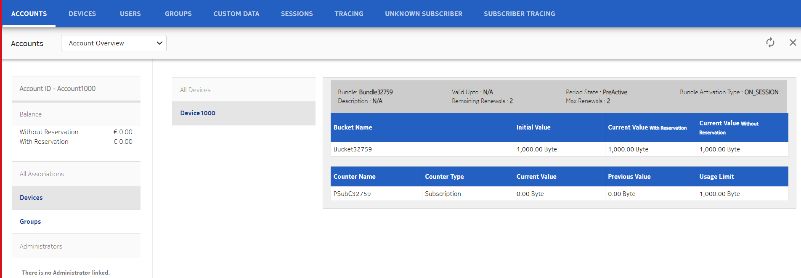
-
Account Overview after call execution: 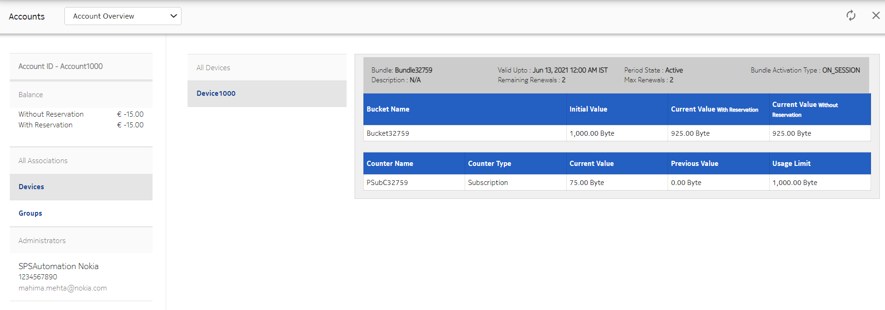
- Account overview after counter reset: 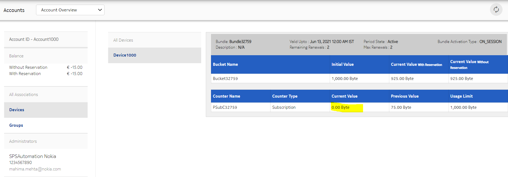
- The device is subscribed to a BundleOnUse (BOU) Bundle having
the bill cycle as Daily. The bundle periodic lifecyle (PLC) is
applied as Daily. The bundle has a subscription counter PLC of 15
minutes.
-
Use case 2: Bill cycle subscribers
- The device is subscribed to a bundle with a reset periodic lifecycle (PLC) as Monthly. The bundle has two buckets with reset periodic lifecyle as Daily and Weekly.
- Bundle has a monthly bill cycle, and the subscription is purchased or
activated along with the account.
- Account and Subscription are created on 16/06/2021 08:54:00.
- The bundle periodically renews every month on 16/07/2021 00:00:00.
- Buckets are created with bundle creation on 16/06/2021
08:54:00.
- The Bucket 1 PLC is Daily, Hence it resets daily, that is on 17/06/2021 00:00:00
- The Bucket 2 PLC is Weekly. Hence it is reset weekly, that is on 23/06/2021 00:00:00.
- Notification is sent upon the bucket reset (Daily or Weekly).
- Lifecycle Reset EDR and notification EDR are also generated with the bucket reset details.
Configuration details:- Bucket Periodic Lifecycle
- During the Start state of the lifecycle, the StartCycleEvent is triggered.
- Reset Period Action is triggered upon the occurrence of StartCycleEvent. The Reset Period Action calculates the Start Time and End Time for a period.
- The lifecycle transits again to the Start state upon successful execution of the Reset Period Action.
- When the lifecycle reaches the End Time, the RepeatCycleEvent is triggered.
- During the execution of RepeatCycleEvent, the Reset Resource Action is triggered. The Reset Resource Action resets the bucket to initial values.
- The lifecycle transits to the Start state.
- The successful execution of the Reset Resource Action triggers the ResetResourceSuccessEvent. The Reset Period Action is triggered, and the Send Notification action sends a notification upon successful reset of the bucket. It is followed by the lifecycle transiting to the Start state.
- If the Reset Resource Action fails, then the ResetResourceFailedEvent is triggered on the lifecycle of the resource. It is followed by the execution of Send Notification action.
- The lifecycle again transits to the Start state.
- Use case 3: Non-bill cycle subscribers
- The device is subscribed to a bundle with a reset periodic lifecycle (PLC) as Monthly, bucket PCL as 24 hours, and counter reset PLC as Weekly.
- Bundle has the monthly bill cycle as exact. That is, the subscription is
purchased or activated along with the account.
- Account and Subscription are created together on 16/06/2021 12:22:30.
- The bundle periodically renews on 16/07/2021 00:00:00.
- Bucket is created with bundle creation on 16/06/2021
12:22:30.
- The bucket PLC is 24 Hours. Hence it is reset on 17/06/2021 12:22:30.
- Notification is sent upon the bucket reset.
- Counter is created with bundle creation on 16/06/2021
12:22:30.
- The counter PLC is weekly. Hence the counter is reset every Week, that is on 23/06/2021 12:22:30.
- Notification is sent upon the counter reset.
- Lifecycle Reset EDR and notification EDR are also generated with the bucket reset details.
-
Use case 4: Non-Bill Cycle subscribers Future Activation Bundle
- The device is subscribed to a bundle which is going to be activated in the future. It has a Weekly periodic lifecycle (PLC). The bundle has a bucket with a 2 hour PLC.
- The bundle has weekly bill cycle.
- Account and Subscription are created on 15/06/2021 10:15:02.
- Bundle is activated in future, that is on 27/06/2021 12:22:17.
- The bundle periodically renews weekly, that is on 22/06/2021 00:00:00.
- Bucket is created with bundle creation on 15/06/2021
10:15:02.
- The bucket PLC is 2 Hours. Hence it resets every 2 hours, that is 16/06/2021 12:24:35 (considering that the bundle is activated on 15/06/2021 10:24:35)
- Notification is sent upon the bucket reset (Daily or Weekly).
- Lifecycle Reset EDR and notification EDR are also generated with the bucket reset details.